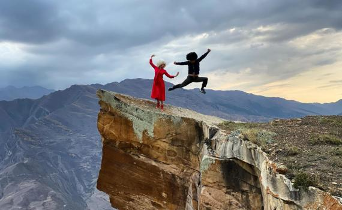

|
|
Джиптур по Кавказу: Гижгит, Эльтюбю, Бермамыт, Джилы-Су! Из Москвы на 4 дня/3 ночи!
Описание услуги

Джиптур для тех, кто влюблен в горы и мечтает увидеть самые красивые места Приэльбрусья! Тур не требует специальной подготовки, нет сложных треккингов, можно ехать всей семьей с детьми. Вас провезут по крутым местам, куда могут добраться только подготовленные джипы с опытными водителями.
| Стоимость тура |
| Дагестан |
Чечня |
| Детский билет |
Взрослый билет |
Детский билет |
Взрослый билет |
| 20000 |
27000 |
15000 |
19000 |
Описание тура
- День 1
- Вылет из Москвы в 10.00 утра. Есть рейс из Шереметьево и Внуково. Перелет до города Минеральные Воды. Помогаем приобрести билеты.
- Прибытие в 12.30 в Минеральные ВодыВстреча на джипах прямо из аэропорта. В пути на Плато Бермамыт вы увидите горные пейзажи и диких лошадей
- Джиптур на Плато Бермамыт это часть Скалистого хребта Большого Кавказа. Его название переводится как «кривое колено». Рельеф места действительно необычный: причудливые колонны, асимметричные склоны и ущелья выглядят, словно декорации в кино. Вершина плато, Большой Бермамыт, находится на высоте 2592 метра над уровнем моря. Сюда едут, чтобы полюбоваться видом на Эльбрус и невероятные закаты, который мы и увидим, а также сделаем прекрасные фото.
- Можно пообедать в горном кафе в 10.00 утра. Есть рейс из Шереметьево и Внуково. Перелет до города Минеральные Воды. Помогаем приобрести билеты.
День 2
- Завтрак в отеле "шведский стол"
- Экскурсия на Чегемские водопады это визитная карточка Кабардино-Балкарии. Здесь сплетаются между собой две стихии вода и камень, образуя невероятные и, порой, фантастические пейзажи. Чегемское ущелье - входит в список самых красивых мест Кабардино-Балкарской Республики. Оно представляет собой огромный 15-метровый разлом в горе, высотой около 300 метров. Стены разлома на этом участке максимально сужаются и путнику кажется, что горы закрывают небо. По его дну течет горная река Чегем. Существует легенда, что каньон образовался от удара лошадиного копыта, когда богатырь Карашауая скакал по горам Кавказа.
- Водопад Абай-Су это самый высокий некаскадный 78-ми метровый водопад Кабардино-Балкарии, спадающий с базальтовых скал. Свое название водопад получил от имени одного из охотников — Абая, известного своей меткостью.
© 2022 — Все права защищены
|